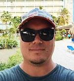

About Me
 After working in the desalination industry as a mechanical technician for the last 6+ years I'm making a return to web design and development. During those 6+ years I've helped design and develop a desalination machine working for a startup called Vari-Ro Desalination and General Electric. I had the pleasure of setting up this machine in The Bahamas, Curacao, and Catalina Island. Unfortunately, GE was downsizing its Water company (and it's rumored they are in the process of selling this division) so my team's positions were no longer available.
Fortunately, I'm proud to be making my comeback as a web developer. I studied web design and worked as designer for a few years in the mid 2000's. I'm looking forward to advancing my skills - and learning all the changes since - to work in the industry again. I'm excited about all the new opportunities there are in the field right now. The sky is the limit for what I want to do. I look forward to working with a new team to make something great!